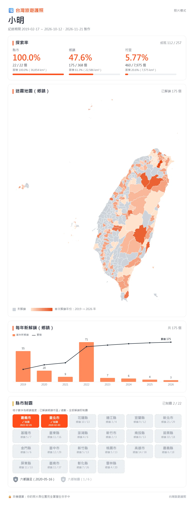
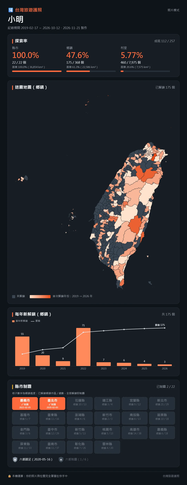

將足跡，變成一本專屬於你的旅行護照
從照片和 Google 時間軸，找出你走過的縣市、鄉鎮、山頂與車站，一項一項解鎖成就。第一次使用？看說明 →


範例：小明的足跡選擇資料來源
本機運算：你的照片與位置完全掌握在你手中說明
- 所有計算都在你的瀏覽器裡完成，不會上傳任何照片、座標或時間。
- 本網站不使用任何追蹤或分析工具，也沒有後端伺服器。
- 網站只會下載公開的圖資（村里界線、成就設定）；明細小地圖會向 OpenStreetMap 載入地圖圖磚。完整清單見說明頁。
- 匯入結果只存在這個瀏覽器，可以隨時刪除。
Google 時間軸
匯入 Google 地圖時間軸的位置紀錄，也可以把檔案拖曳到這裡。
匯入備份
匯入從本網站匯出的備份檔，換電腦或在手機上接著用。
照片資料夾
讀取照片裡的拍攝位置與時間，也可以把資料夾拖曳到這裡。
詳細說明
- 會讀取所選資料夾與所有子資料夾。
- 只讀照片檔頭的 EXIF（GPS 座標、拍攝時間），不讀整張照片，也不會上傳。
- 支援 JPG、HEIC、PNG、TIFF 與常見 RAW（CR2、NEF、ARW、DNG…）；影片暫不支援。
- 沒有 GPS 的照片會略過；同一張照片的多份備份只算一次。
- Chrome、Edge 會跳出資料夾選擇視窗；其他瀏覽器改用檔案選擇器。
手機照片（補點）
補上沒記錄到的地點，或匯入少量照片。大量照片建議在電腦用「照片資料夾」匯入。
詳細說明
- 每次選的照片都會加進同一份「手機照片」，不會取代之前加入的；同一張照片重複選只算一次。
- 一次建議幾十張。iPhone 的 HEIC 照片選完後，手機需要先轉檔，張數越多等越久；照片不會上傳。
- 張數較多時，可在選單點「選擇檔案」，從「檔案」App 選取（先在「照片」App 選取 → 分享 →「儲存到檔案」）。不用轉檔，但會暫時多占一份空間，匯入完成後可以刪掉，足跡不受影響。
- 沒有 GPS 的照片（截圖、從通訊軟體存下來的圖）會略過。
Google 相簿 Takeout
匯入 Google Takeout 匯出的相簿。
詳細說明
- 到 takeout.google.com 只勾選「Google 相簿」匯出，下載後解壓縮。
- 讀取每張照片旁的 JSON 附檔裡的位置與拍攝時間。
開發用：